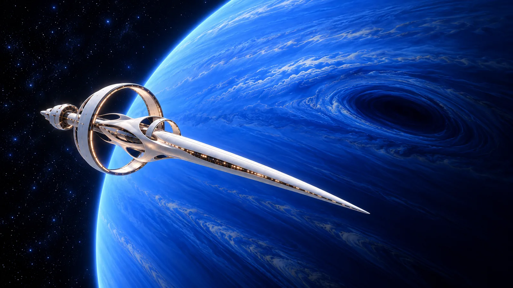
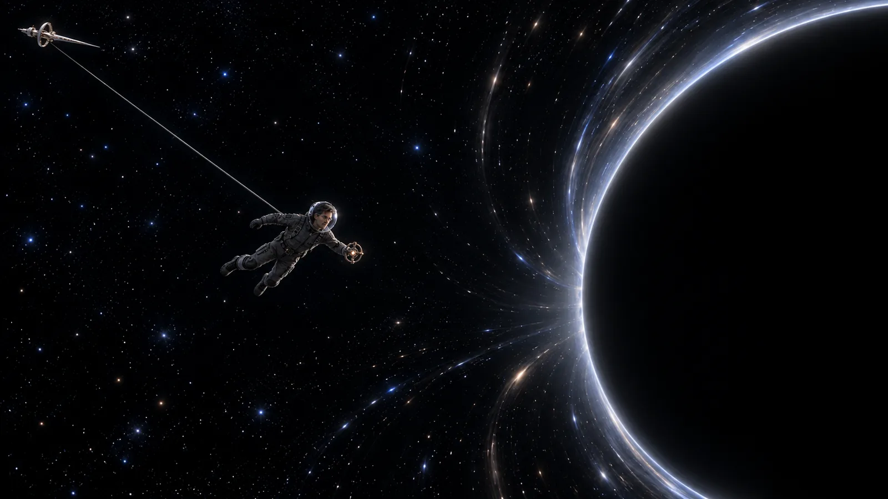

O saguão da Estação de Lançamento Orbital Paraíso Celeste parecia ter sido projetado por alguém que nunca conhecera uma despedida de verdade.
Havia uma cúpula de vidro sobre tudo, alta demais, limpa demais, filtrando o céu em um tom de azul que não correspondia àquele dia. A estação chamava aquilo de “horizonte de confiança”: uma programação visual que eliminava nuvens pesadas, excesso de brilho e qualquer lembrança desconfortável de que, do lado de fora, o clima podia fazer o que quisesse.
Zee achava o nome ruim.
Achava a cúpula bonita.
Esse tipo de contradição o acompanhava havia semanas.
A Orion Lambda esperava além do vidro de segurança, presa à plataforma de lançamento como uma agulha branca apontada para um lugar que ninguém ali ousava chamar de morte. O casco reluzia sob as luzes do hangar. Não tinha marcas de guerra, nem amassados, nem a aparência séria que Zee imaginava que uma nave destinada a conversar com um buraco negro deveria ter.
Parecia nova demais.
Confiante demais.
Parecia uma propaganda.
No centro do saguão, seis cientistas aguardavam em trajes de indução gravitacional. Iara conferia, pela terceira vez, os dados de propulsão em seu pulso. Raoni examinava os próprios indicadores de saúde como se o corpo humano fosse uma máquina particularmente mal projetada. Mira conversava baixo com Jamal e Dandara, os irmãos responsáveis por comunicação e sistemas.
E Zee, no meio deles, tentava não olhar demais para a nave.
A Acrópole tinha feito da partida um evento discreto.
Nada de transmissão pública em escala planetária. Nada de plateia. Nada de declaração triunfal em praça aberta. Haveria um comunicado técnico depois do lançamento, uma nota de confiança, algumas imagens cuidadosamente selecionadas da tripulação trabalhando.
Mas, mesmo numa despedida reservada, a instituição não perdia a chance de construir uma moldura.
Havia três câmeras estacionárias. Dois drones silenciosos. Um grupo de membros do Conselho Técnico observando de uma área elevada. E, perto de uma coluna branca, Maris Venn já ensaiava a expressão de serenidade que usaria se alguém perguntasse por que o cientista que alertara o mundo sobre a singularidade estava agora dentro de uma nave indo diretamente até ela.
Zee não olhou para ela.
Estava ocupado tentando impedir Kauê de desmontar o fecho do seu traje.
— É só um encaixe de pressão — disse o menino, segurando a pequena ferramenta entre os dedos. — Eu consigo melhorar a vedação.
— Você consegue piorar a vedação de um traje que precisa funcionar no espaço — respondeu Zee.
— Melhorar e piorar são hipóteses. Eu ainda não testei.
— E não vai testar.
Kauê pareceu ofendido com a falta de abertura científica do pai.
Ao lado dele, Maya segurava uma placa de papel físico. Não projeção, não tela, não mensagem codificada: papel.
Otto tinha ajudado a fazer.
As letras estavam tortas, pintadas à mão, e diziam:
VOLTA LOGO!
Zee leu duas vezes.
— É uma ordem?
— É uma ordem — disse Maya.
Reya estava a poucos passos, vestindo um conjunto branco simples, sem as cores arquitetadas que costumava escolher para eventos públicos. Tinha prendido o cabelo para trás e tentava sorrir enquanto segurava Lúmen, Amora e Aru. As crianças pareciam curiosas, mas não assustadas. Kauê olhava para o pai com admiração, Maya com expectativa, e Aru e Amora com a naturalidade de quem ainda não entende o que significa perder alguém.
Reya tinha ajudado Zee a revisar os parâmetros da missão na noite anterior.
Fez perguntas que ninguém da Acrópole fizera.
Onde fica a segunda escotilha?
Quem pode cancelar uma ordem do comando terrestre?
Qual é o protocolo se a comunicação cair?
O que exatamente significa “preservação de estabilidade narrativa em evento de perda operacional”?
Zee não conseguira responder à última.
Agora, diante dele, ela parecia ter decidido não perguntar mais nada.
— Você está bonito — disse Reya.
Zee olhou para o traje cinza, rígido e cheio de fechos.
— Essa é uma opinião muito generosa.
— Não. Você está com cara de alguém que finalmente chegou onde sempre quis.
A frase era boa demais para não carregar alguma coisa por baixo.
— Reya...
Ela se aproximou e ajustou uma dobra na gola dele, embora não houvesse dobra alguma.
— Não faz discurso. Não tenta me tranquilizar. Só volta.
Zee segurou as mãos dela.
— Eu vou fazer tudo para voltar.
Ela respirou fundo.
— Eu sei.
Não era uma absolvição. Era o máximo de fé que ela conseguia oferecer sem mentir.
Otto chegou perto deles e foi direto ao ponto.
— Zee, não morre.
— Otto.
— É a versão curta do meu plano de segurança.
Otto então puxou do bolso uma folha dobrada várias vezes. Não era uma folha pequena. Era uma sequência inteira de páginas grampeadas.
— Eu preparei uma lista.
Zee olhou para o volume de papel.
— Você preparou um manifesto.
— É uma lista de providências sensatas. Alimentação, descanso, higiene, protocolo de sono, como reconhecer alucinações por isolamento, como reconhecer alucinações induzidas por singularidade, como distinguir uma alucinação de uma experiência transcendente verdadeira...
— Otto.
— E uma seção sobre quais membros da tripulação parecem mais propensos a tomar decisões ruins sob pressão.
— Você classificou meus colegas?
— Provisoriamente.
Zee pegou a lista e a guardou no compartimento interno do traje.
— Eu vou ler.
Otto o olhou, desconfiado.
— Vai mesmo?
— Não.
— Certo. Obrigado pela honestidade.
Tupac ficou perto dos dois, em silêncio. Parecia desconfortável com estações espaciais, vitrines demais e qualquer lugar onde as paredes não tivessem manchas de uso.
Quando Zee se virou para ele, Tupac tirou um pequeno frasco do bolso.
— Não abre isso sem pensar — disse.
— Isso é a infusão?
— Uma versão concentrada.
— Você está me dando neurodroga para usar perto de um buraco negro?
— Estou te dando uma coisa que ajuda a mente a não ficar estreita demais quando o medo tentar ocupar tudo.
Zee segurou o frasco.
— Isso é muito bonito.
— Não é bonito. É químico. E pode causar náusea.
— Ainda assim. Eles não vão me deixar embarcar com essas coisas.
Tupac assentiu. Então o abraçou.
Era um abraço macio e aconchegante. O tipo de abraço que dizia tudo o que nenhum dos dois queria tentar organizar em frase.
Quando se afastaram, Tupac olhou diretamente para Zee.
— Você ainda acha que vai controlar a Acrópole de dentro?
Zee soltou uma respiração curta.
Tupac pousou a mão no ombro de Zee.
— Vai. Mas não deixa eles te convencerem de que voltar atrás é covardia.
Zee assentiu.
Naquele instante, viu Lupa.
Ela não estava escondida perto de um painel, nem fingia esperar outra nave. Estava junto de Otto e Tupac, como devia estar. Usava um casaco escuro, simples, e tinha os braços cruzados contra o peito.
Não havia acusação em seu rosto.
Havia medo.
E isso era pior.
Zee se aproximou dela.
— Você veio.
— Eu tentei não vir.
— E falhou?
— Horrivelmente.
Ele sorriu.
— Lupa...
— Não faz promessa.
— Eu não ia fazer.
— Ia, sim.
— Talvez.
Ela respirou fundo, como se quisesse dizer dez coisas e escolhesse uma que doesse menos.
— Você não é descartável porque a Acrópole diz que é necessário. E não é indispensável porque ela põe seu nome num documento. Não esquece que existe diferença.
Zee olhou para a Orion Lambda.
— Se eu não for, outra pessoa vai.
— Eu sei.
— E se eu for, talvez eu consiga impedir que a missão vire uma desculpa para eles atrasarem o Plano B.
— Talvez.
— Você acha que eu estou cometendo um erro.
— Acho que você está fazendo uma escolha que pode custar mais do que você entende. — Ela tocou de leve a placa de identificação da Acrópole no peito dele. — Mas acho que você já entendeu isso. Só não sabe o que fazer com esse entendimento.
Zee abriu a boca para responder.
A chamada de embarque soou.
Não foi uma sirene. Foi uma melodia curta, suave e irritantemente bonita.
Tripulação da Orion Lambda: embarque autorizado.
Mira foi a primeira a seguir para o corredor de acesso. Iara fez um gesto para Zee. Raoni já revisava alguma coisa no pulso, talvez tentando se convencer de que sair da Terra era uma escolha profissional normal.
Zee olhou para Reya, para as crianças, para Otto, Tupac e Lupa.
A família inteira parecia pequena diante da nave.
Ou talvez a nave parecesse grande demais diante deles.
Ele beijou Reya. Abraçou os filhos uma última vez. Kauê tentou colocar a ferramenta no bolso dele; Reya confiscou antes. Maya entregou a placa de papel.
— Não cabe no traje — disse Zee.
— Então lembra dela.
Ele assentiu.
Quando começou a caminhar para a ponte de embarque, Otto gritou:
— Zee!
Ele virou.
Otto apontou para a nave.
— Não confia em ninguém que chama uma missão suicida de “reconhecimento de proximidade”!
Alguns técnicos olharam na direção deles.
Tupac cobriu o rosto com a mão.
Reya quase riu.
Zee ergueu uma mão, como se pudesse transformar aquele gesto em resposta suficiente, e entrou.
A escotilha fechou atrás dele.
A Orion Lambda não tinha janelas no corredor de acesso.
Zee achou isso ofensivo.
Depois de atravessar metade da cidade para chegar a uma nave que o levaria além de Netuno, ele queria pelo menos olhar a Terra diminuindo. Em vez disso, foi recebido por paredes curvas, luz baixa e uma voz de bordo que anunciava cada etapa com a calma de quem jamais fora arremessada para fora da atmosfera.
— Bem-vindo, cientista-chefe Solano. Seu índice de tensão está elevado. Deseja iniciar protocolo de serenidade de pré-lançamento?
— Não.
— Recusa registrada. A Orion Lambda respeita sua autonomia em níveis compatíveis com a segurança da missão.
Zee parou.
— Isso é uma ameaça?
— É uma informação.
— Pior ainda.
A voz não respondeu.
Na sala de comando, Iara já estava presa à cadeira de aceleração.
— Bom saber que você discute com a nave — disse ela. — Isso geralmente melhora a moral da equipe.
— Ela começou.
— Isso geralmente melhora a moral da nave.
Raoni ocupava a estação médica. Mira revisava os níveis de sedação de emergência, embora ninguém tivesse pedido sedação. Jamal e Dandara alternavam entre as telas de navegação e comunicação com a Terra, falando baixo demais para que Zee entendesse.
Ele sentou-se na cadeira central.
Cientista-chefe.
O título parecia pesado quando aparecia no painel diante dele.
A contagem regressiva começou.
No visor principal, a cúpula da estação abriu-se em segmentos. O céu perfeito projetado sobre o saguão desapareceu. Por uma fração de segundo, Zee viu o céu real: nuvens escuras, chuva caindo em algum ponto distante, uma faixa de luz pálida no horizonte.
Depois a nave se soltou.
A aceleração veio como uma decisão tomada por outra pessoa.
O corpo de Zee foi prensado contra o assento. O peito reclamou. A visão estreitou. Ele ouviu Iara dizer alguma coisa sobre estabilidade de propulsão, mas as palavras se perderam dentro de um rugido que parecia menos som e mais força.
Então, tão de repente quanto começara, a violência acabou.
A Terra ficou pequena no visor.
Azul, branca, irregular.
Sem a camada da AURA, sem os domos, sem as frases institucionais, parecia vulnerável de uma forma quase constrangedora.
— Bem-vindo ao espaço — disse Raoni.
Zee olhou para o planeta.
— Parece mal administrado.
Iara riu.
Foi a primeira vez que ele ouviu alguém rir na Orion Lambda.
A viagem foi longa o bastante para transformar a coragem em rotina.
Nos primeiros dias, todos tinham perguntas demais. Depois, tinham tarefas demais. Finalmente, tinham silêncio demais.
Saturno apareceu como uma presença antiga, seus anéis claros desenhando um corte preciso contra o escuro. Zee passou quase uma hora olhando para ele até Mira se aproximar.
— Você está meditando ou evitando a atualização psicológica? — ela perguntou.
— As duas coisas.
— Isso é possível?
— Você é a psicóloga.
— Infelizmente.
Ela se sentou na estação próxima.
— Você está dormindo pouco.
— Estamos indo encontrar um buraco negro.
— Isso não é argumento clínico.
— É um contexto clínico.
Mira observou Saturno no visor.
— Você acredita mesmo que o Dispositivo Antissingularidade vai funcionar?
Zee pensou antes de responder.
— Acho que ele funcionou em ambientes controlados.
— Isso não foi o que perguntei.
Ele sorriu sem humor.
— Acho que precisamos que funcione.
— Isso é pior.
Quando Netuno surgiu, dias depois, o humor a bordo mudou.
O planeta cresceu no visor até ocupar grande parte da frente da nave: azul profundo, turbulento, belo demais para parecer seguro. A Grande Mancha Escura girava sob as nuvens como um olho sem intenção humana.

Além dele, quase invisível no início, estava o ponto.
A singularidade.
Não parecia uma boca.
Não parecia um monstro.
Parecia uma falha minúscula no universo. Um ponto escuro onde as estrelas atrás dele não conseguiam continuar.
Zee sentiu um frio que não vinha do sistema térmico.
— Está menor do que eu imaginava — disse Dandara.
— As piores coisas costumam ser — respondeu Raoni.
O plano era simples no papel.
A Orion Lambda faria uma aproximação calculada. Zee sairia com o Dispositivo Antissingularidade e o conectaria à matriz de leitura externa. O aparelho emitiria uma onda de compensação gravitacional, registraria a resposta do fenômeno e, se os parâmetros permitissem, iniciaria uma contenção preliminar.
No papel, também havia uma cláusula sobre retirada imediata.
Zee tinha relido aquela cláusula tantas vezes que ela se tornara um ruído.
— Aproximação final em sessenta segundos — anunciou Iara.
Mira olhou para Zee.
— Ainda pode delegar a operação externa.
— Não.
— Cientista-chefe não significa técnico de campo.
— Significa que eu sei o que procurar.
— Significa que você acha que é o único que saberia.
Ele a encarou.
Mira não desviou.
— Boa sorte — ela disse, por fim.
O traje fechou ao redor dele.
A escotilha externa abriu-se.
E o espaço deixou de ser belo.

Do lado de fora, o vazio parecia pressionar contra tudo. Não havia som, mas havia uma sensação de presença. A singularidade não era maior de perto. Era pior: precisava de quase nada para deformar tudo em torno dela.
Zee avançou preso ao cabo de segurança.
— Distância de operação em dez metros — disse Iara no comunicador.
— Entendido.
O dispositivo em suas mãos parecia ridiculamente pequeno.
Um conjunto de anéis, emissores e um núcleo de compensação que tantas pessoas tinham testado em laboratório, sob luzes estáveis, com alarmes prontos para disparar e técnicos a metros de distância.
Ali, parecia um brinquedo caro.
— Ativando o Neutralizador — Zee anunciou.
Pressionou o comando.
Os anéis acenderam.
Por um segundo, a luz branca se expandiu.
A singularidade pareceu tremer.
No visor do traje, números enlouqueceram.
— Leitura anômala — disse Dandara.
— Isso é resposta? — perguntou Iara.
— Não sei — Zee respondeu.
A luz do aparelho falhou.
Voltou.
Falhou outra vez.
— Zee, recue — ordenou Iara. — O gradiente está subindo.
— Só preciso recalibrar a frequência.
— Recuar agora.
Ele girou o seletor manual. Lembrou-se das simulações, dos modelos, da hipótese de que a singularidade respondia ao padrão de ordem da Terra.
— Se ela está reagindo ao campo — Zee disse —, talvez seja porque reconheceu a assinatura.
— Zee — a voz de Iara ficou dura. — Recue.
Ele ativou uma segunda sequência.
O dispositivo cuspiu uma descarga azul.
Por um instante, toda a luz ao redor pareceu inclinar-se.
A força veio depois.
Não como vento. Não como uma mão.
Como se o próprio espaço tivesse decidido que Zee não pertencia mais àquele ponto.
O cabo esticou.
— Estou sendo puxado — ele disse, primeiro baixo, como se ainda pudesse transformar aquilo num dado técnico.
— Acionando recolhimento! — gritou Iara.
O cabo vibrou.
Zee tentou agarrá-lo com a mão livre. O Dispositivo Antissingularidade escapou de seus dedos e girou lentamente, apagado, entre ele e o vazio.
— Zee, solta o equipamento! — disse Raoni.
— Já soltei!
— Recuo de emergência!
Os propulsores do traje dispararam.
Por um segundo, ele parou.
Então a singularidade puxou de novo.
Mais forte.
O cabo gemeu.
Zee viu Netuno distorcer-se no visor, o azul virando uma faixa longa de cor impossível. Viu a Orion Lambda pequena demais, distante demais. Viu a própria mão presa ao cabo, branca dentro da luva.
Pensou em Reya.
Não no dia da despedida.
Pensou na cozinha, no cabelo dela preso de qualquer jeito, reclamando de uma praça “melancólica demais” enquanto as crianças faziam barulho ao fundo.
Pensou na incubadora.
Na filha que ainda não tinha rosto, voz ou nome.
Na promessa idiota que fizera antes de sair.
“Eu volto antes de você”, ele dissera.
Pensou em Maya e sua placa.
Volta com dados e sem buracos.
Pensou em Kauê perguntando se podia melhorar um encaixe.
Pensou em Otto, que dissera para não confiar em nomes bonitos.
Pensou em Tupac.
Não deixa eles te convencerem de que voltar atrás é covardia.
E pensou em Lupa dizendo que ele confundia tentar com controlar.
O cabo se partiu.
Não houve estrondo.
Só uma liberação súbita.
A Orion Lambda se afastou dele num movimento impossível, ou talvez fosse Zee que estivesse sendo puxado para trás, para baixo, para dentro de uma direção que não existia.
— Zee! — alguém gritou no comunicador.
Ele tentou responder.
Não conseguiu.
A luz de Netuno se dobrou.
As estrelas se esticaram.
O vazio deixou de ser vazio.
E então Zee foi sugado.
Não para a escuridão.
Para alguma coisa além dela.